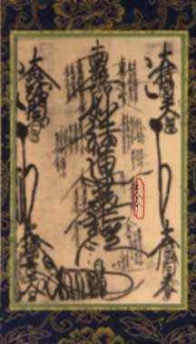
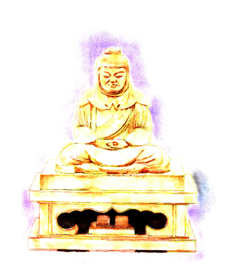

The great teacher Chih-i of China also known as Tendai Daishi is located on the right hand side fourth row down. Nichiren Shonin, the founder of our order started his religious study as a Tendai monk. Nichiren would consider Chih-i as one in the lineage of Nichrien Buddhism.
Tendai Daishi (Jpn.); Chih-i (Chn.) 538 - 597 CE